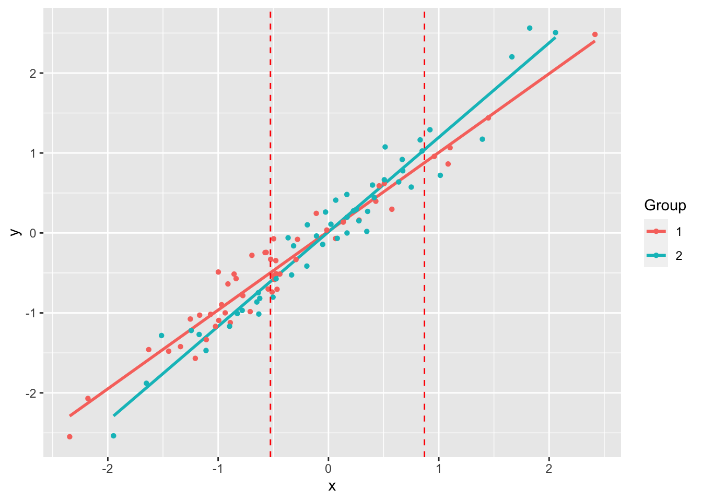

library(ggplot2)
library(abd)
ggplot(DesertBirds, aes(count)) +
geom_histogram(bins = 30, fill = "darkred") +
labs(x = "Count", y = "Number of Species") +
cowplot::theme_cowplot()
Code for most lab projects is available either on the lab GitHub page or my personal GitHub page.
Here are some R packages that are potentially of use.
abd: Analysis of Biological DataCollaborating with Randall Pruim (Calvin College), I co-developed an R package (abd) to accompany the first edition of The Analysis of Biological Data by Michael Whitlock and Dolph Schluter. This is an excellent textbook (now in its second edition, still remarkably inexpensive) for teaching advanced undergraduate and introductory graduate statistics. The new edition of this book has associated R code, mostly making this package redundant. But I still like having the datasets from the book handy. I use them for teaching and demos really often, like the distribution of counts of desert birds or hemoglobin levels in different populations.
library(ggplot2)
library(abd)
ggplot(DesertBirds, aes(count)) +
geom_histogram(bins = 30, fill = "darkred") +
labs(x = "Count", y = "Number of Species") +
cowplot::theme_cowplot()
library(ggplot2)
library(abd)
ggplot(Hemoglobin, aes(x = hemoglobin, y = relative.frequency)) +
geom_bar(stat = "identity", fill = "darkred") +
labs(x = "Hemoglobin", y = "Relative Frequency") +
facet_grid(group ~ .) +
cowplot::theme_cowplot()
The package can be installed via CRAN
install.packages("abd")or directly from GitHub:
remotes::install_github("Middleton-Lab/abd")We have had a lot of dependency creep over the years, so the number of packages that get installed alongside abd can be quite large.
abdDataThe abd package has quite a few dependencies resulting from its use of the mosaic package.
The data from abd is arguably its most useful feature. A more streamlined version of abd with only the data is available via abdData, which can be installed with
remotes::install_github("Middleton-Lab/abdData")The abdData user manual is available online.
jnt: Johnson-Neyman TechniqueThe Johnson-Neyman technique is used to determine the region of an analysis of covariance where the slopes are not significantly between the covariate. This allows the determination of bounds of a region of “equal” slope despite the presence of a “significant” slope (by whatever definition of “significant” you choose).
We used this approach in Lavin SR, Karasov WH, Ives AR, Middleton KM, Garland T Jr (2008) Morphometrics of the avian small intestine compared with that of nonflying mammals: A phylogenetic approach. Physiol Biochem Zool 81: 526-550.
library(jnt)Loading required package: smatrset.seed(1234)
n <- 50
x1 <- rnorm(n)
y1 <- x1 + rnorm(n, sd = 0.2)
x2 <- rnorm(n)
y2 <- 1.25 * x2 + rnorm(n, sd = 0.2)
df1 <- data.frame(x = x1, y = y1)
df2 <- data.frame(x = x2, y = y2)
(jnt.out <- jnt(df1, df2))Fitting with OLSAssuming x variable is column 1, and y is column 2.
Johnson-Neyman Technique
Alpha = 0.05
Data 1:
Slope 0.9853
Intercept 0.02126
Data 2:
Slope 1.182
Intercept 0.01386
Region of non-significant slope difference
Lower: -0.5258
Upper: 0.8701 plot(jnt.out)Warning: `aes_string()` was deprecated in ggplot2 3.0.0.
ℹ Please use tidy evaluation idioms with `aes()`.
ℹ See also `vignette("ggplot2-in-packages")` for more information.
ℹ The deprecated feature was likely used in the jnt package.
Please report the issue at <https://github.com/Middleton-Lab/jnt/issues>.`geom_smooth()` using formula = 'y ~ x'
jnt can be installed directly from GitHub:
remotes::install_github("Middleton-Lab/jnt")MuscleTernary: Ternary plots for 3D dataMuscleTernary can be installed directly from GitHub:
remotes::install_github("Middleton-Lab/MuscleTernary")binning: Binning for mouse wheel activity databinning can be installed directly from GitHub:
remotes::install_github("Middleton-Lab/binning")